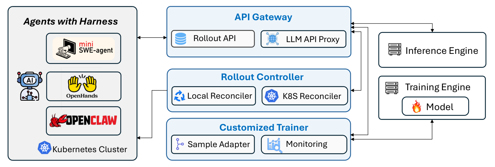
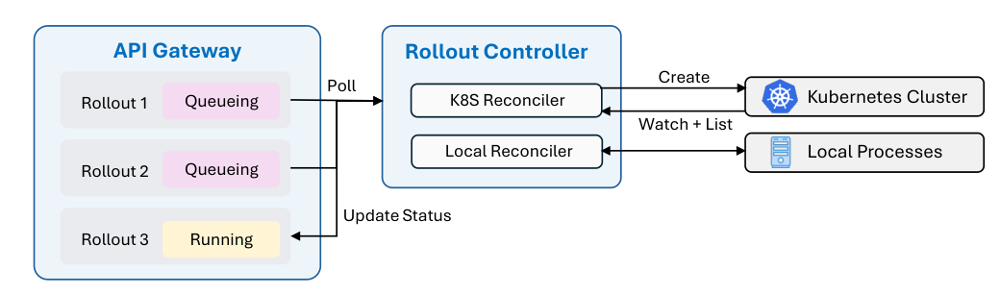

Agent Lightning v1.0: Towards Harnessed Agentic RL (Microsoft)
TL;DR
- Agent Lightning v1.0 (He, Zhang, Zhou, Yang, Kang, Zhang, Qiu, Tsui, Xu, Luo — Microsoft, arXiv 2608.17528) trains models with RL while an unmodified agent harness owns the environment loop: an endpoint proxy at the model-call boundary turns any harness (mini-SWE-agent, OpenHands, Claude Code-class scaffolds) into a training data source, in ~3,500 lines of code.
- Its real contribution is naming and solving what breaks when the trainer only sees request/response pairs: retokenization (identical text, different token boundaries → broken prefix merging), dynamic sample counts (one rollout explodes into a variable number of training samples via subagents and context summarization), advantage calculation (rollout-level vs. sample-level groups), loss normalization, and backend scheduling (their answer: collocated async RL).
- Headline: with ~6K filtered SWE-smith tasks and modest compute, Qwen3.5-9B goes from 41.8% to 56.4% on SWE-bench Verified (+14.6 points); a Llama-3.2-3B search agent gains +16.6 (25.1→41.7) and a Qwen3-4B sandbox agent +18.3 (51.9→70.2).
Why this matters
Agentic RL has a control-inversion problem this reading list keeps circling. Classic RL frameworks (verl, AReaL, slime) assume the trainer owns the rollout loop — ReAct-style, one linear token history. Real deployed agents live inside harnesses that own tools, context construction, subagent spawning, and compaction, and the harness talks to the model through a stateless chat API. If you want to train the model that actually ships, you either reimplement the harness inside the trainer (and train against a toy), or you treat the harness as an opaque box and train at the API boundary. This paper is the most complete public engineering account of the second path — and unlike its predecessor (the original Agent Lightning, which introduced the disaggregated architecture), v1.0 is a systematic tour of the failure modes of that boundary, each with a measured fix.
The deeper point for this tracker: once harnesses are opaque boxes, the messy details this paper catalogs — token-prefix breakage, reward inheritance across split samples, group statistics over variable sample counts — become the actual algorithm design surface of agentic RL. GRPO's math is trivial; deciding what counts as "a sample" when Claude Code spawns three subagents and compacts its context twice is not.
The core idea
Formally, both classic and harnessed agentic RL are POMDPs, but the harness changes what the policy sees and who holds state. A rollout \(\rho\) is a sequence of model calls captured at the endpoint:
where \(p_i\) is a harness-constructed prompt and \(a_i\) the model's response. The latent state now factors as
— harness state (message history, todo lists, compaction summaries) joins environment state, and the number of training samples per task becomes dynamic (Figure 2 of the paper).

Figure 1 from the paper: the overall framework — the harness runs as-is against an OpenAI-compatible API Gateway; the gateway records every model call and reward event; the trainer consumes them as RL data.
Three components: an API Gateway (a single stateful service storing rollouts, models, and events — by default a model_request event with prompt token IDs, response token IDs, and logprobs per call, plus a terminal reward event), a Rollout Controller, and a Customized Trainer. The harness needs zero modification; GRPO-style grouping is expressed as multiple rollout IDs per training example.

Figure 12 from the paper: the Rollout Controller reconciles rollout status in the API Gateway with agent executions running as Kubernetes Jobs or local processes.
How it works
Retokenization and sample merging. A multi-turn agent ideally yields one training sample per rollout by prefix-concatenation: text-wise, \((p_{i}^{\mathrm{text}},a_{i}^{\mathrm{text}})\preceq p_{i+1}^{\mathrm{text}}\). But training needs the token-level prefix condition, and it silently breaks: chat templates don't compose (\(\operatorname{Template}(A\,\|\,B)\neq\operatorname{Template}(A)\,\|\,\operatorname{Template}(B)\)) and retokenizing the accumulated text shifts token boundaries even when the text is identical:
(the paper's Figure 3 example: "having" sampled as h+aving retokenizes to hav+ing). When the prefix condition fails — or when the harness spawns subagents or summarizes context, replacing the prefix wholesale — the rollout must be split into multiple training samples that all inherit the rollout's outcome reward. This is not an edge case: in their coding runs only 36% of rollouts survive as a single training sample; the average rollout yields 2.41 samples.
Advantage calculation. Given dynamic sample counts, should GRPO group statistics be computed over rollouts or over samples? Existing frameworks disagree (verl Uni-Agent and Polar: rollout-level; slime and AReaL: sample-level). Sample-level statistics let rollouts that split into many samples dominate the group mean; the paper argues for rollout-level advantage — every sample inherits its rollout's advantage — and backs it with the coding-agent ablation below.
Loss normalization. Same issue, one level down. Token-mean loss over the whole batch,
vs. seq-mean-token-mean: with variable \(N_\rho\), both silently reweight rollouts; they add rollout-level normalization so each task attempt contributes equally.
Collocated async RL. Sync RL waits for the slowest rollout; AReaL-style async needs two GPU pools plus two queues. Their middle path shares one GPU pool: the gateway stops admitting new requests when enough data is collected, drains in-flight calls, runs the update, then reopens — no straggler blocking, no second cluster.
Agent Lightning v1.0 loop (condensed from the paper):
register policy endpoint(s) with API Gateway
repeat:
# rollout phase (collocated GPUs serve inference)
controller launches K agent jobs per example (harness unmodified)
each harness call -> gateway: routes to policy server,
logs model_request(prompt_ids, response_ids, logprobs)
on task end: harness/env reports terminal reward event
when batch quota reached: gateway pauses new requests, drains in-flight
# sample construction
for each rollout:
merge calls where token-prefix condition holds
split at retokenization breaks / subagent branches / compactions
all samples inherit the rollout's outcome reward
# update phase (same GPUs)
advantages <- group stats at ROLLOUT level (GRPO/RLOO)
loss <- token loss with rollout-level normalization
update policy; push new weights to inference servers; resume rollouts
For the coding agent they also describe serious data hygiene on SWE-smith: drop tasks with empty problem statements (18,033 of 59,136!), missing Docker branches, or >200 tests; then a model-based difficulty filter (run Qwen3.5-9B 4×, discard tasks solved in all four rollouts), leaving ~6K informative examples, plus reward-hacking safeguards.
Results
Three harnesses, three algorithms, three model families — the point being generality of the plumbing, not one benchmark:
- Search agent (Search-R1 setting, Llama-3.2-3B-Instruct, GRPO, HotpotQA train): validation reward 25.1% → 41.7% (+16.6) across six QA benchmarks' samples.
- General instruction-following agent (LLM-in-Sandbox harness, Qwen3-4B-Instruct-2507, RLOO): 51.9% → 70.2% (+18.3).
- Coding agent (mini-SWE-agent harness, Qwen3.5-9B, filtered SWE-smith): SWE-bench Verified 41.8% → 56.4% (+14.6) at step 208, using rollout-level advantage + rollout-level normalization. The ablation (Figure 9) shows sample-level advantage is worse on validation reward and entropy dynamics — the clearest empirical evidence yet that the "what is a sample" bookkeeping decisions are performance-relevant, not just plumbing.
How it connects
Direct sibling of OpenForgeRL (training-agents-in-harnesses) — same serve-and-record proxy inversion, but where OpenForgeRL emphasized orchestration scale (Kubernetes, any harness), Agent Lightning v1.0 contributes the taxonomy of boundary pathologies (retokenization, sample merging, advantage level, loss normalization) with ablations. ClawGym II (added to this tracker the same day) is the third leg: it recovers multi-turn structure via prefix trees over captured calls and shows mix-harness training — worth reading together, since prefix-tree recovery is essentially their answer to the same retokenization/merging problem. GLM-5.3's SAO attacks the same straggler problem with single-rollout async at industrial scale; collocated async is the small-lab version. The harness-as-training-variable finding from OpenForgeRL becomes an explicit design axis here. It also connects to Molt's hackable-trainer philosophy and, upstream, to this tracker's recursive-harness-improvement cluster (DarwinX, EvoHarness-RL, Harness-R1): those evolve the harness around a frozen model; this trains the model inside a frozen harness. The obvious synthesis — co-evolving both — still has no public implementation.
Critical take
The engineering candor is the paper's best feature, but the evaluation is narrow where it matters most: only mini-SWE-agent — among the simplest harnesses — gets the full coding treatment, while the introduction's motivating examples (Claude Code, OpenHands, OpenClaw, Codex — all cited) are not trained against. Subagent spawning and context compaction, the most violent sample-splitters, are handled in the formalism but barely stress-tested in the experiments (mini-SWE-agent does little of either). The rollout-level-vs-sample-level ablation is single-task, single-model; given how much the field disagrees (verl vs. slime defaults), one coding run is thin evidence for a design rule. Baselines are also self-relative: no head-to-head against OpenForgeRL or a trainer-owned-loop implementation of the same task, so we can't tell if opaque-box training costs anything versus white-box. And 41.8→56.4 with 6K examples is impressive but the difficulty filter was run with the same model being trained — the curriculum is implicitly tuned to Qwen3.5-9B's frontier, so cross-model reproducibility is untested (inferred from the setup — verify in the paper). Still: anyone building agentic RL infrastructure should read Sections 2–3 as a pre-mortem checklist.
If you remember three things
- The chat-API boundary is lossy for RL: identical text does not mean identical tokens — \(\operatorname{Tok}(\operatorname{Decode}(a^{\mathrm{tok}}))\neq a^{\mathrm{tok}}\) — so harness rollouts must be split into multiple reward-inheriting samples; in practice only ~36% of coding rollouts stay whole (2.41 samples/rollout).
- Compute group statistics at the rollout level, not the sample level — otherwise rollouts that fragment more get more votes in the GRPO baseline, and their coding ablation says this actually hurts.
- 6K well-filtered tasks moved SWE-bench Verified by 14.6 points on a 9B model — data hygiene plus correct boundary bookkeeping, not scale, did the work; and collocated async RL gets you past stragglers without a second GPU pool.